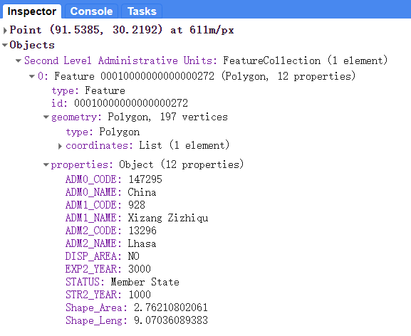
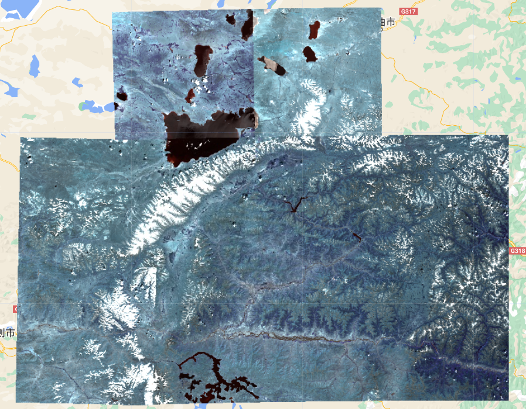
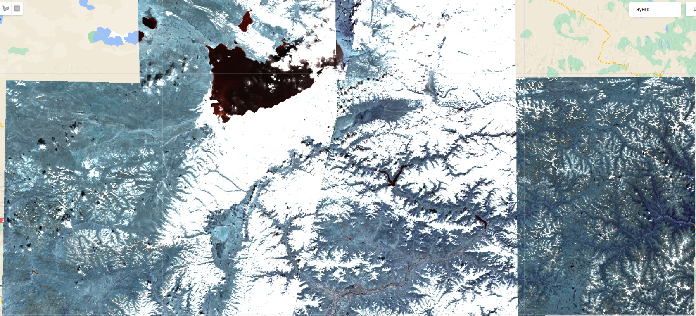
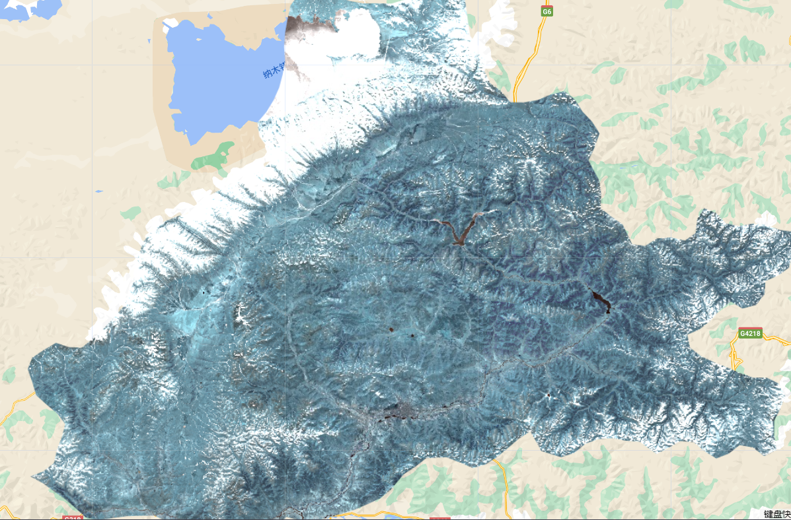
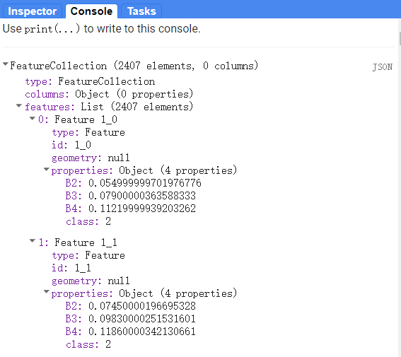
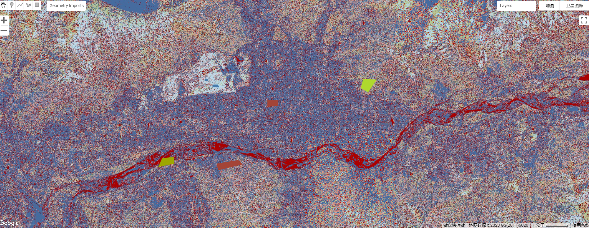
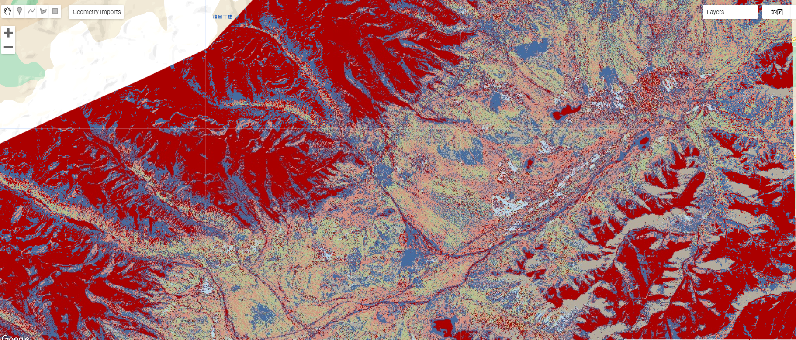

7 week 6: Classification I
7.1 Summary
This week is a classification task based on the application of Google Earth Engine.
classification algorithm: decision tree and random forest
7.1.1 Decision tree
Decision tree algorithm is a supervised learning algorithm that can be used for classification and regression problems. The algorithm works by recursively partitioning the feature space into smaller regions using a series of binary splits. At each split, the algorithm selects the feature that best separates the data into the target classes or predicts the target variable. The split is made based on the value of the selected feature, and the data is split into two or more subgroups based on the selected threshold value. This process is repeated until a stopping criterion is met, such as a minimum number of observations in a subgroup, or no further improvement in the classification or regression accuracy.
The decision tree algorithm creates a tree-like model of decisions and their possible consequences. Each internal node in the tree represents a test on an attribute, each branch represents the outcome of the test, and each leaf node represents a class label or a predicted value. The algorithm can handle both categorical and numerical data, and can easily handle missing values and outliers. Decision trees are easy to interpret and visualize, and can be used for feature selection and variable importance analysis.
One of the most popular decision tree algorithms is the Classification and Regression Tree (CART) algorithm, which can handle both classification and regression tasks. Another popular algorithm is the ID3 algorithm, which is used for classification tasks only and is based on entropy and information gain measures. Other decision tree algorithms include C4.5, C5.0, and CHAID, which have different splitting criteria and pruning methods.
7.1.2 Random forest
Random forest is a machine learning algorithm used for classification, regression, and other tasks. It is an ensemble learning method that combines multiple decision trees to make more accurate predictions.
The random forest algorithm works by constructing multiple decision trees during training time and outputting the class that is the mode of the classes (classification) or mean prediction (regression) of the individual trees. Each tree is constructed using a random subset of the training data and a random subset of the features. This helps to prevent overfitting and reduces variance in the predictions.
During testing time, the random forest algorithm takes a new input and feeds it through each of the trees in the forest. Each tree then outputs a prediction, and the final prediction is based on the mode of the predictions from all of the individual trees.
Random forest has many advantages, including its ability to handle large datasets with high dimensionality and its ability to provide an estimate of the importance of each feature in the classification or regression task. It also has a low risk of overfitting compared to other algorithms.
Some potential drawbacks of the random forest algorithm include its computational complexity and its tendency to perform poorly on datasets with imbalanced classes. However, with proper tuning and optimization, these limitations can be overcome
7.2 Application
7.2.1 Vector data
First of all, select the studying area based on the administrative unit layers data, my choice is Lhasa city, the capital city of Tibet. The longitude and latitude is [91.1457, 30.063].
this is the fundamental information:
Map.setCenter(91.1457, 30.063, 8);
var styleParams = {
fillColor: 'b5ffb4',
color: '00909F',
width: 1.0,
};
// parameters fullfill the dataset
// dataset = dataset.style(styleParams);
Map.addLayer(dataset, {}, 'Second Level Administrative Units');
var lhasa = dataset.filter('ADM2_CODE == 13296');

7.2.2 EO data
Then generate the imagery with minimal cloud cover, at Lhasa, I use 1 as the parameter of cloudy pixel percentage, that means the cloud cover should be less than 1%. This is wayone, then, create another function maskS2clouds to mask the cloudy pixel and do the division, that is waytwo.
wayone:
var divide10000 = function(image) {
return image.divide(10000);
};
var wayone = ee.ImageCollection('COPERNICUS/S2_SR_HARMONIZED')
.filterDate('2022-01-01', '2022-10-31')
.filterBounds(lhasa) // Intersecting ROI
// Pre-filter to get less cloudy granules.
.filter(ee.Filter.lt('CLOUDY_PIXEL_PERCENTAGE',1));
var wayone_divide = wayone.map(divide10000);
// var wayone_divide_mean = wayone_divide.median()
Map.centerObject(lhasa, 10);

waytwo:
function maskS2clouds(image) {
var qa = image.select('QA60');
// Bits 10 and 11 are clouds and cirrus, respectively.
var cloudBitMask = 1 << 10;
var cirrusBitMask = 1 << 11;
// Both flags should be set to zero, indicating clear conditions.
var mask = qa.bitwiseAnd(cloudBitMask).eq(0)
.and(qa.bitwiseAnd(cirrusBitMask).eq(0));
return image.updateMask(mask).divide(10000);
}
var waytwo = ee.ImageCollection('COPERNICUS/S2_SR_HARMONIZED')
.filterDate('2022-01-01', '2022-10-31')
.filterBounds(lhasa) // Intersecting ROI
// Pre-filter to get less cloudy granules.
.filter(ee.Filter.lt('CLOUDY_PIXEL_PERCENTAGE',20))
.map(maskS2clouds);
// var waytwo_mean = waytwo.median();
Map.addLayer(waytwo, visualization, 'waytwoRGB');

As a result, waytwo performs worse than wayone because waytwo has higher cloud cover than wayone. but wayone is nstill not an ideal picture.
7.2.3 How to fix:
- method 1: use median() function
// for example
var wayone_divide = wayone.map(divide10000);
var wayone_divide_mean = wayone_divide.median();
Map.addLayer(wayone_divide_median, visualization, 'wayoneRGB');- method 2: use cloud and shadow coverage script
// This example demonstrates the use of the
// COPERNICUS/S2_CLOUD_PROBABILITY dataset, the
// ee.Algorithms.Sentinel2.CDI() method for computing a
// cloud displacement index and directionalDistanceTransform()
// for computing cloud shadows.
// Sentinel-2 Level 1C data. Bands B7, B8, B8A and B10 from this
// dataset are needed as input to CDI and the cloud mask function.
// Cloud probability dataset. The probability band is used in
// the cloud mask function.
// Sentinel-2 surface reflectance data for the composite.
// The ROI is determined from the map.
var roi = ee.Geometry.Point([91.5385, 30.2192]);
Map.centerObject(roi, 10);
// Dates over which to create a median composite.
var start = ee.Date('2022-01-29');
var end = ee.Date('2022-01-31');
// S2 L1C for Cloud Displacement Index (CDI) bands.
s2 = s2.filterBounds(roi).filterDate(start, end)
.select(['B7', 'B8', 'B8A', 'B10']);
// S2Cloudless for the cloud probability band.
s2c = s2c.filterDate(start, end).filterBounds(roi);
// S2 L2A for surface reflectance bands.
s2Sr = s2Sr.filterDate(start, end).filterBounds(roi)
.select(['B2', 'B3', 'B4', 'B5']);
// Join two collections on their 'system:index' property.
// The propertyName parameter is the name of the property
// that references the joined image.
function indexJoin(collectionA, collectionB, propertyName) {
var joined = ee.ImageCollection(ee.Join.saveFirst(propertyName).apply({
primary: collectionA,
secondary: collectionB,
condition: ee.Filter.equals({
leftField: 'system:index',
rightField: 'system:index'})
}));
// Merge the bands of the joined image.
return joined.map(function(image) {
return image.addBands(ee.Image(image.get(propertyName)));
});
}
// Aggressively mask clouds and shadows.
function maskImage(image) {
// Compute the cloud displacement index from the L1C bands.
var cdi = ee.Algorithms.Sentinel2.CDI(image);
var s2c = image.select('probability');
var cirrus = image.select('B10').multiply(0.0001);
// Assume low-to-mid atmospheric clouds to be pixels where probability
// is greater than 65%, and CDI is less than -0.5. For higher atmosphere
// cirrus clouds, assume the cirrus band is greater than 0.01.
// The final cloud mask is one or both of these conditions.
var isCloud = s2c.gt(65).and(cdi.lt(-0.5)).or(cirrus.gt(0.01));
// Reproject is required to perform spatial operations at 20m scale.
// 20m scale is for speed, and assumes clouds don't require 10m precision.
isCloud = isCloud.focal_min(3).focal_max(16);
isCloud = isCloud.reproject({crs: cdi.projection(), scale: 20});
// Project shadows from clouds we found in the last step. This assumes we're working in
// a UTM projection.
var shadowAzimuth = ee.Number(90)
.subtract(ee.Number(image.get('MEAN_SOLAR_AZIMUTH_ANGLE')));
// With the following reproject, the shadows are projected 5km.
isCloud = isCloud.directionalDistanceTransform(shadowAzimuth, 50);
isCloud = isCloud.reproject({crs: cdi.projection(), scale: 100});
isCloud = isCloud.select('distance').mask();
return image.select('B2', 'B3', 'B4').updateMask(isCloud.not());
}
// Join the cloud probability dataset to surface reflectance.
var withCloudProbability = indexJoin(s2Sr, s2c, 'cloud_probability');
// Join the L1C data to get the bands needed for CDI.
var withS2L1C = indexJoin(withCloudProbability, s2, 'l1c');
// Map the cloud masking function over the joined collection.
var masked = ee.ImageCollection(withS2L1C.map(maskImage));
// Take the median, specifying a tileScale to avoid memory errors.
var median = masked.reduce(ee.Reducer.median(), 8);
// Display the results.
var viz = {bands: ['B4_median', 'B3_median', 'B2_median'], min: 0, max: 0.3};
Map.addLayer(median, viz, 'median');
7.2.4 Classification
7.2.4.1 Clip
// clip by the gadm administrative shape: wayone
var wayone_clip = wayone_divide_mean.clip(lhasa)
Map.addLayer(wayone_clip, visualization, 'wayoneRGB_clip');

7.2.4.2 Training
Training the data is an interesting process because the method used is a decision tree, a supervised machine learning algorithm, the accuracy of model depends on the accuracy of labels, so the classification of the various different land types had to be accurate in order for the resulting model to work better. Based on this, I looked for d typical cases of different land types as the training set.
urban area: (with high density) one community of Lhasa city center, Lhasa financial center, universities
water: the Namucuo in northern Lhasa, Lhasa river
wetland: Lalu Wetland National Nature Reserve (sample many times)
bare earth: Zayaba Monastery, mountain area
forest: Lhasa Nimu National Forest Park,
ice land: the top of those mountains
urban area: (with low density) living area, villages around the city center
var polygons = ee.FeatureCollection([
ee.Feature(water, {'class': 1}),
ee.Feature(urban_high, {'class': 2}),
ee.Feature(wetland, {'class': 3}),
ee.Feature(bare_earth, {'class': 4}),
ee.Feature(forest, {'class': 5}),
ee.Feature(ice_land, {'class':6}),
ee.Feature(urban_low, {'class':7})
]);
// Use these bands for classification.
var bands = ['B2', 'B3', 'B4'];
// The name of the property on the points storing the class label.
var classProperty = 'class';
// Sample the composite to generate training data. Note that the
// class label is stored in the 'landcover' property.
var training = wayone_clip.select(bands).sampleRegions({
collection: polygons,
properties: [classProperty],
scale: 10
});
print(training, "training")

Within acceptable computational limits, the same land type can be sampled multiple times, which can significantly improve the accuracy of the prediction results
// Train a CART classifier.
var classifier = ee.Classifier.smileCart().train({
features: training,
classProperty: classProperty,
});
// Print some info about the classifier (specific to CART).
print('CART, explained', classifier.explain());
// Classify the image.
var classified = wayone_clip.classify(classifier);
// add output
Map.centerObject(lhasa);
Map.addLayer(classified, {min: 1, max: 7, palette: [
'ab0000', // urban area with high density
'466b9f', // open water
'b8d9eb', // Woody wetlands
'b5c58f', // Mixed forest
'b3ac9f', //Barren land (rock/sand/clay)
'466b9f', //Perennial ice/snow
'd99282' //urban area: lower density
]}, "classified");
- Example 1

As the picture shows, this is the centre of Lhasa, the red coloured part is the Lhasa River flowing through the city, the blue is the main city with a high population density, while the white part in the upper left corner is a larger wetland, the periphery of the city centre is bare ground.
- Example 2

In this example, the red part represents the water part and the blue part is the mountain peak and is above 6,000m, therefore the peaks are covered in snow all year round. Comparing this with the map, I found that the area is the Nyingchi Tanggula range, where you can see that the ridges run from north-east to south-west, and the green parts are mixed coniferous forests, located on the mountainsides and at the foot of the mountains. The thin blue line in the bottom right corner is the Qinghai-Tibet Highway, which runs along the Nyingchi Tanggula Range.
However, this method depends on the accuracy of the training data I selected before, I introduced another more accurate method.
7.2.4.3 training and testing data (use pixel method)
////Pixel approach/////////////
var pixel_number= 1000;
var water_points=ee.FeatureCollection.randomPoints(water, pixel_number).map(function(i){
return i.set({'class': 1})})
var urban_high_points=ee.FeatureCollection.randomPoints(urban_high, pixel_number).map(function(i){
return i.set({'class': 2})})
var wetland_points=ee.FeatureCollection.randomPoints(wetland, pixel_number).map(function(i){
return i.set({'class': 3})})
var bare_earth_points=ee.FeatureCollection.randomPoints(bare_earth, pixel_number).map(function(i){
return i.set({'class': 4})})
// var forest_points=ee.FeatureCollection.randomPoints(forest, pixel_number).map(function(i){
// return i.set({'class': 5})})
// var ice_land_points=ee.FeatureCollection.randomPoints(ice_land, pixel_number).map(function(i){
// return i.set({'class': 6})})
// var urban_low_points=ee.FeatureCollection.randomPoints(urban_low, pixel_number).map(function(i){
// return i.set({'class': 7})})
var point_sample=ee.FeatureCollection([
urban_high_points,
water_points,
wetland_points,
bare_earth_points
// forest_points,
// ice_land_points
// urban_low_points
])
.flatten()
.randomColumn();
// assign 70% of training points to validation
var split=0.7
var training_sample = point_sample.filter(ee.Filter.lt('random', split));
var validation_sample = point_sample.filter(ee.Filter.gte('random', split));
// take samples from image for training and validation
var training = wayone_clip.select(bands).sampleRegions({
collection: training_sample,
properties: ['class'],
scale: 10,
});
var validation = wayone_clip.select(bands).sampleRegions({
collection: validation_sample,
properties: ['class'],
scale: 10
});
// Random Forest Classification
var rf1_pixel = ee.Classifier.smileRandomForest(300)
.train(training, 'class');
// Get information about the trained classifier.
print('Results of RF trained classifier', rf1_pixel.explain());
// // --------------------- Step 3: Conduct classification --------------------------------
var rf2_pixel = wayone_clip.classify(rf1_pixel);
Map.addLayer(rf2_pixel, {min: 1, max: 5, palette: [
'ab0000', // urban area with high density urban high 2
'466b9f', // open water water 1
'b8d9eb', // Woody wetlands wetland 3
// 'b5c58f', // Mixed forest bare_earth 4
'b3ac9f' //Barren land (rock/sand/clay) forest 5
// '466b9f' //Perennial ice/snow ice land 6
// 'd99282' //urban area: lower density ruban low
]}, "RF_pixel");
// // --------------------- Step 4: Assess Accuracy --------------------------------
var trainAccuracy = rf1_pixel.confusionMatrix();
print('Resubstitution error matrix: ', trainAccuracy);
print('Training overall accuracy: ', trainAccuracy.accuracy());
var validated = validation.classify(rf1_pixel);
var testAccuracy = validated.errorMatrix('class', 'classification');
var consumers=testAccuracy.consumersAccuracy()
print('Validation error matrix: ', testAccuracy);
print('Validation overall accuracy: ', testAccuracy.accuracy())
print('Validation consumer accuracy: ', consumers);
Result:
Initially with 7 categories, I found the accuracy of the validation dataset to be around 80% and the OOB error to be around 17%, independent of both how many datasets were divided into training sets and how many trees were used in random forest. I realized it is possible to reduce the categories.
When combining urban_high and urban_low, I saw a significant increase in those indicators, based on this finding, I then combine the forest and wetland land types, and compare the indicators with ice land and without ice land.
out of bag error estimate: 7.56%
Training overall accuracy: 98.91%
Validation overall accuracy: 92.38%


The results show that the indicators divided into four categories are better than the five categories. although 3 categories performs better than 4 categories, urban features and river features are not well identified and therefore 3 categories are not used.
urban area
water area
bare earth
wetland
It is true that increasing the number of trees in a decision tree can help to improve accuracy, and increasing from 100 to 300 trees can improve metrics such as accuracy, but after increasing to 500 trees there is no significant change.
7.3 Reflection
In this week, I know how to select my own ROI, process graphics and classify different land type based on decision tree and random forest. As a supervised learning algorithm, the selection of training data input is one of the critical factors when training model, I always chose typical land types and got good results.
But both decision tree and random forest do not perform as well as dichotomous tasks for multi-category tasks.